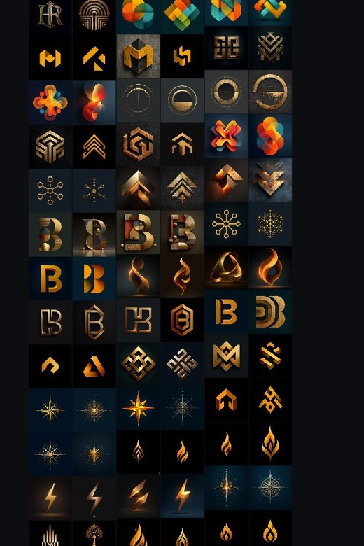
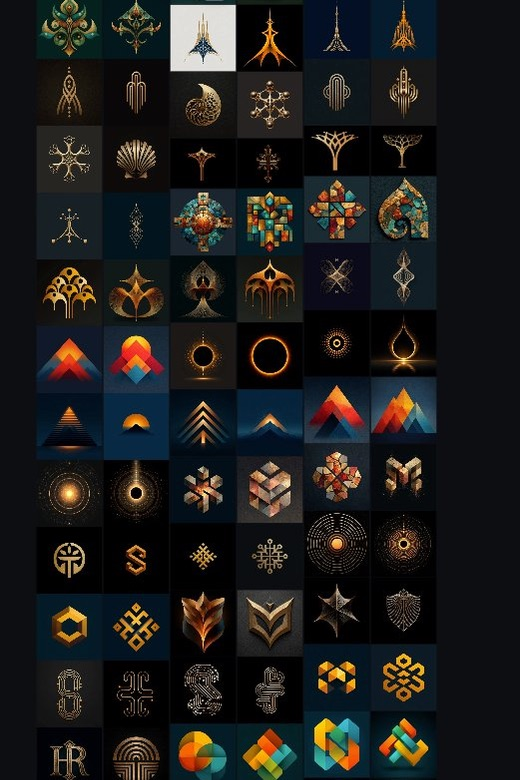
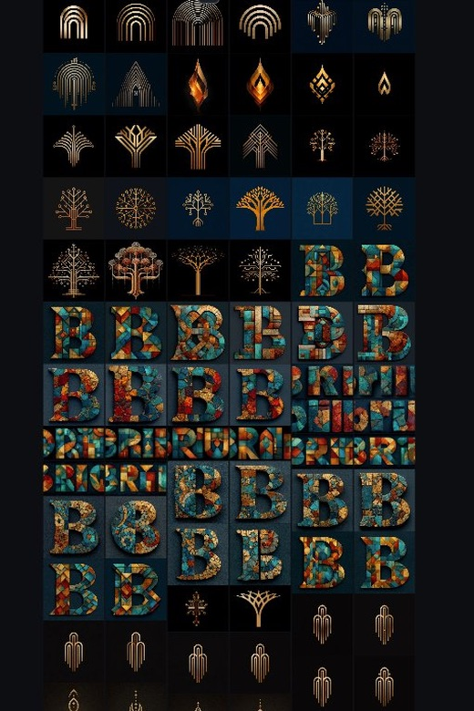
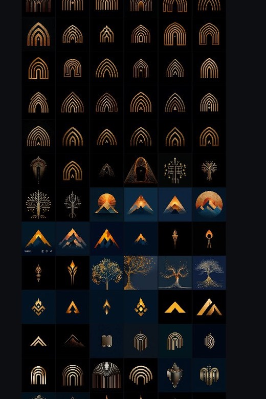
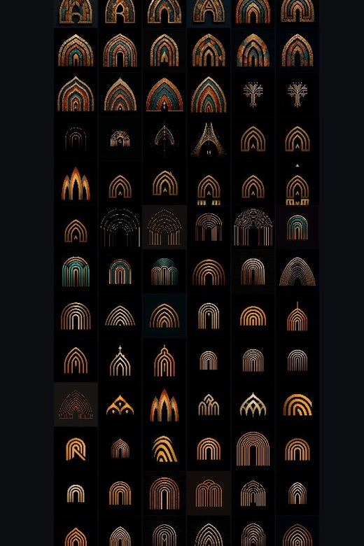
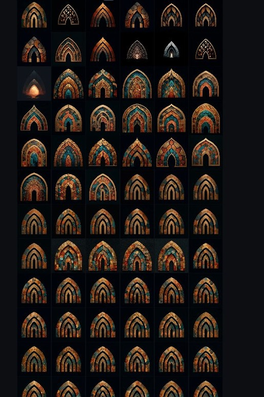
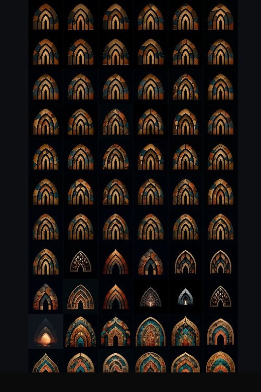

The problem
You need a brand. Traditionally that means hiring an agency, doing a 6-8 week discovery process, reviewing mood boards, going through rounds of revisions, and writing a check for $15,000-25,000. For a company that's trying to prove agents can replace expensive outsourced work, that felt like exactly the wrong way to start.
So we used the stack.
Finding the name
The name search started in Claude. We explored directions: geographic roots, Gaelic and Celtic language patterns, abstract concepts, short domains that would actually be available. The agent generated hundreds of candidates. Each one was checked against domain availability, trademark risk, pronunciation in English, and whether it would hold up as a brand.
We built a new OpenClaw skill mid-session to automate the domain search. The agent ran whois lookups, checked .com and .ai availability, identified who owned the domains we wanted, analyzed whether they were parked or active, and did preliminary trademark screening through USPTO. 50+ candidates got the full treatment.
"Briu" came from an exploration of Catalan. It means "energy," "push," or "courage." The .ai was available. No trademark conflicts. Short, pronounceable, and it didn't sound like every other AI company.
But the name did something else we didn't plan for. A Catalan word naturally pointed toward Barcelona, and Barcelona pointed toward Gaudi. The moment the name landed, a visual world came with it: pointed arches, mosaic tilework, organic geometry, warm gold and teal. The name and the design language share the same root. That connection wasn't engineered. It emerged from following the work.
A human made the final call. The agent did the legwork that made an informed call possible.
Cost: a few dollars in API for the domain search runs across 50+ candidates. $85 for the domain registration.
The visual identity
With the Catalan origin pointing toward Gaudi, we had a starting prompt. We opened Midjourney and began generating with his aesthetic as the reference: the pointed arches of Sagrada Familia, the mosaic tilework of Park Guell, the way he layered organic geometry with warm stone and gold.
The first runs leaned hard into that world. Mosaic arches with heavy texture and detail. Teal, copper, and gold on dark backgrounds. Cathedral window shapes directly inspired by Gaudi's structural forms. These were beautiful but too complex for a logo mark. You can see the density in the early generations: intricate stonework patterns, layered colors, ornamental detail that would disappear at small sizes.
Then we started simplifying. The Gaudi influence evolved from literal mosaic into clean geometric arches. The texture dropped away but the DNA stayed: the pointed arch, the warm gold palette, the sense of something architectural and layered. Gold on black. The forms got more abstract: concentric arches, pointed peaks, nested shapes that suggested both architecture and mountains.
We went through a divergent phase. Trees, flames, mountain peaks, abstract symbols, compass roses, Celtic knots. We tried letterforms: mosaic B's, geometric B's, minimal B's with the brand color palette. Some of these were stunning as standalone art but wrong as logos.
Then convergence. The arch motif kept winning. We pushed hard on variations: line weight, symmetry, layering, how many nested arches, pointed vs. rounded, with and without a base. Dozens of near-identical generations with tiny differences.
The final mark is a clean, layered arch in warm gold tones. It came from Canva for final formatting: adjusting proportions, testing it against the dark background, making sure it worked at 16px favicon size and full-page hero size.
Over 400 generations. The whole process took one evening.
Watch the brand evolve
Scroll through the Midjourney archive and watch the brand take shape in real time. Each phase represents a distinct creative direction — from literal Gaudi mosaics to the final clean mark.
Scroll right to follow the evolution →

B lettermarks, flame motifs, abstract symbols. Searching for the right direction. Wide open.

Stars, compass roses, interlocking shapes. Testing every direction before committing.

Mosaic B's, monogram variations, tree of life explorations. None beat the arch as a brand mark.

Mountains, trees, flames. The arch motif starts emerging. Testing it against every alternative.

Art deco feel. Concentric arches, varying line weights, clean geometry. The strongest candidates come from here.

The Gaudi influence simplifies. Arch shape survives, mosaic drops away. Gold on dark. Getting very close.

Direct Gaudi influence refined. Pointed arches, mosaic tilework, teal and copper. The final mark emerges.
Where we ended up.
A Gaudi-inspired layered arch in warm gold tones. The final mark was assembled in Canva — adjusting proportions, testing against the dark background, verifying it worked at 16px favicon size and full-page hero size — then exported as a transparent PNG ready for production deployment.
What this would have cost traditionally
A branding agency engagement for name development, visual identity, and brand guidelines typically runs $15,000-25,000 for a small firm. That includes strategy sessions, mood boards, 2-3 concept directions, rounds of revisions, and final asset delivery. Timeline: 6-8 weeks.
What we spent:
| Item | Cost |
|---|---|
| Midjourney subscription | ~$30/month |
| Domain registration (briu.ai) | $85 |
| Claude (name generation, strategy) | Included in $200/mo Max plan |
| OpenClaw (domain search across 50+ candidates) | ~$5 in API |
| Canva | Free tier |
| Total | ~$120 |
Timeline: one evening for the visual identity. One session for the name and domain.
What the agent cannot do here
The agent generated 400+ images. It could not tell which ones were good. It could not feel the difference between "interesting" and "right for this brand." It could not decide that the arch was more meaningful than the mountain, or that the clean gold line art said more than the textured mosaic.
Every generation was a response to a human prompt. Every prompt was informed by what the human saw in the previous generation. The iteration loop was: human taste directs, agent expands the search space, human selects, agent refines. That loop ran hundreds of times in one evening.
Peter Steinberger, the creator of OpenClaw, described the same dynamic: "People who try to automate the whole thing... it misses style, love, that human touch. I don't think you can automate that away so quickly."
The agent made it possible to explore a search space that would have taken weeks to cover manually. The human made every decision that mattered.
The takeaway
The whole thing is one creative arc. The agent searched hundreds of names across multiple languages and landed on a Catalan word. That word pointed to a visual world — Gaudi, Barcelona, arches, mosaics. The founder directed Midjourney through 400+ iterations refining that visual world into a clean mark, then finalized it in Canva. Name to logo in one connected process, orchestrated by a human using agents at every step.
You don't need a branding agency to build a real brand identity. You need taste, a clear direction, and tools that let you iterate fast enough to find what you're looking for. The AI expands what's possible in a given amount of time. The human decides what's worth keeping.
If you're starting a business and you have a clear aesthetic sense, this process is replicable. Open Midjourney. Start generating. React to what you see. Refine the prompt. Keep going until something clicks. Then take it to Canva or Figma for final polish.
The $120 brand is live at briu.ai right now.